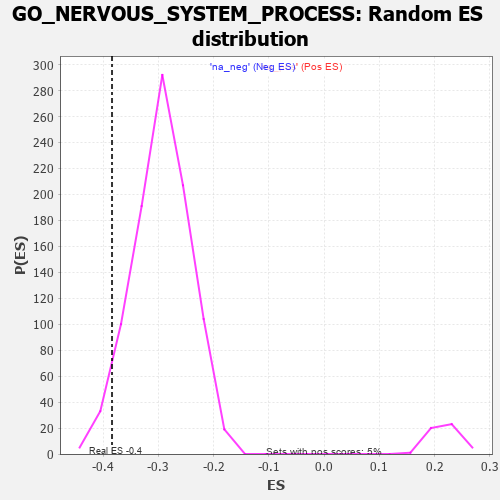

| | | Dataset | 7d |
| Phenotype | NoPhenotypeAvailable |
| Upregulated in class | na_neg |
| GeneSet | GO_NERVOUS_SYSTEM_PROCESS |
| Enrichment Score (ES) | -0.38415772 |
| Normalized Enrichment Score (NES) | -1.3027536 |
| Nominal p-value | 0.043112513 |
| FDR q-value | 0.46805736 |
| FWER p-Value | 1.0 |
Table: GSEA Results Summary
 Fig 1: Enrichment plot: GO_NERVOUS_SYSTEM_PROCESS
Fig 1: Enrichment plot: GO_NERVOUS_SYSTEM_PROCESS
Profile of the Running ES Score & Positions of GeneSet Members on the Rank Ordered List
| PROBE | GENE SYMBOL | GENE_TITLE | RANK IN GENE LIST | RANK METRIC SCORE | RUNNING ES | CORE ENRICHMENT | | 1 | HMX3 | | | 17 | 4.775 | 0.0396 | No |
| 2 | RTP3 | | | 121 | 1.425 | 0.0388 | No |
| 3 | ADCY8 | | | 124 | 1.418 | 0.0510 | No |
| 4 | RORB | | | 189 | 1.097 | 0.0523 | No |
| 5 | NCAM2 | | | 191 | 1.085 | 0.0617 | No |
| 6 | KIFC3 | | | 232 | 0.978 | 0.0651 | No |
| 7 | HGF | | | 276 | 0.870 | 0.0672 | No |
| 8 | SOX14 | | | 278 | 0.859 | 0.0746 | No |
| 9 | RGR | | | 303 | 0.814 | 0.0786 | No |
| 10 | GSK3A | | | 351 | 0.745 | 0.0791 | No |
| 11 | NBN | | | 405 | 0.696 | 0.0784 | No |
| 12 | SRF | | | 542 | 0.615 | 0.0663 | No |
| 13 | KCND2 | | | 617 | 0.590 | 0.0619 | No |
| 14 | EYS | | | 654 | 0.575 | 0.0623 | No |
| 15 | AMFR | | | 856 | 0.518 | 0.0410 | No |
| 16 | PDE1B | | | 929 | 0.500 | 0.0361 | No |
| 17 | LRIG1 | | | 946 | 0.497 | 0.0384 | No |
| 18 | UBA5 | | | 982 | 0.488 | 0.0382 | No |
| 19 | AKT1 | | | 1040 | 0.476 | 0.0350 | No |
| 20 | MEF2C | | | 1054 | 0.473 | 0.0375 | No |
| 21 | NTAN1 | | | 1120 | 0.459 | 0.0332 | No |
| 22 | SRC | | | 1128 | 0.459 | 0.0363 | No |
| 23 | NSUN5 | | | 1230 | 0.442 | 0.0272 | No |
| 24 | WDR36 | | | 1260 | 0.437 | 0.0273 | No |
| 25 | NOB1 | | | 1284 | 0.433 | 0.0281 | No |
| 26 | DRGX | | | 1378 | 0.414 | 0.0198 | No |
| 27 | P2RY1 | | | 1416 | 0.407 | 0.0186 | No |
| 28 | DDHD2 | | | 1557 | 0.381 | 0.0039 | No |
| 29 | TPPP | | | 1646 | 0.365 | -0.0042 | No |
| 30 | BACE1 | | | 1673 | 0.360 | -0.0044 | No |
| 31 | GRM8 | | | 1791 | 0.339 | -0.0165 | No |
| 32 | ABR | | | 1812 | 0.335 | -0.0161 | No |
| 33 | FMR1 | | | 1816 | 0.334 | -0.0136 | No |
| 34 | RNF10 | | | 1833 | 0.331 | -0.0127 | No |
| 35 | GLRA2 | | | 1892 | 0.321 | -0.0174 | No |
| 36 | CIC | | | 1988 | 0.307 | -0.0269 | No |
| 37 | ROR1 | | | 1993 | 0.306 | -0.0247 | No |
| 38 | MEIS2 | | | 2063 | 0.296 | -0.0310 | No |
| 39 | UBA6 | | | 2114 | 0.289 | -0.0349 | No |
| 40 | CREB1 | | | 2243 | 0.269 | -0.0490 | No |
| 41 | BTBD9 | | | 2407 | 0.245 | -0.0678 | No |
| 42 | FEN1 | | | 2446 | 0.237 | -0.0706 | No |
| 43 | VSX1 | | | 2473 | 0.231 | -0.0720 | No |
| 44 | MAGT1 | | | 2780 | 0.186 | -0.1097 | No |
| 45 | RIC8A | | | 2833 | 0.179 | -0.1148 | No |
| 46 | NR2E1 | | | 2844 | 0.177 | -0.1145 | No |
| 47 | CLN6 | | | 2847 | 0.177 | -0.1132 | No |
| 48 | ANO1 | | | 2982 | 0.152 | -0.1291 | No |
| 49 | OPA3 | | | 3035 | 0.145 | -0.1346 | No |
| 50 | LEF1 | | | 3037 | 0.144 | -0.1334 | No |
| 51 | GPX1 | | | 3109 | 0.135 | -0.1414 | No |
| 52 | MTMR2 | | | 3126 | 0.133 | -0.1422 | No |
| 53 | TLX3 | | | 3140 | 0.131 | -0.1428 | No |
| 54 | SFRP5 | | | 3154 | 0.129 | -0.1433 | No |
| 55 | GCH1 | | | 3166 | 0.127 | -0.1436 | No |
| 56 | PAX6 | | | 3170 | 0.127 | -0.1429 | No |
| 57 | OR5B2 | | | 3173 | 0.126 | -0.1420 | No |
| 58 | GMFB | | | 3381 | 0.091 | -0.1678 | No |
| 59 | CDK5 | | | 3480 | 0.080 | -0.1797 | No |
| 60 | PARD3 | | | 3584 | 0.063 | -0.1924 | No |
| 61 | MAPK3 | | | 3589 | 0.062 | -0.1924 | No |
| 62 | NF1 | | | 3713 | 0.040 | -0.2079 | No |
| 63 | SYT11 | | | 3732 | 0.036 | -0.2099 | No |
| 64 | REEP2 | | | 3800 | 0.027 | -0.2182 | No |
| 65 | WDR47 | | | 3823 | 0.023 | -0.2209 | No |
| 66 | NIPBL | | | 3900 | 0.010 | -0.2305 | No |
| 67 | GLRA1 | | | 3957 | 0.001 | -0.2377 | No |
| 68 | EYA1 | | | 3987 | -0.006 | -0.2414 | No |
| 69 | TULP2 | | | 3997 | -0.007 | -0.2425 | No |
| 70 | TCF15 | | | 4077 | -0.020 | -0.2525 | No |
| 71 | MTOR | | | 4114 | -0.025 | -0.2569 | No |
| 72 | ABL1 | | | 4125 | -0.027 | -0.2579 | No |
| 73 | SYNJ1 | | | 4173 | -0.038 | -0.2637 | No |
| 74 | OPA1 | | | 4330 | -0.065 | -0.2831 | No |
| 75 | SETD5 | | | 4343 | -0.067 | -0.2841 | No |
| 76 | FIG4 | | | 4348 | -0.068 | -0.2840 | No |
| 77 | ADRB2 | | | 4352 | -0.068 | -0.2838 | No |
| 78 | ARF4 | | | 4383 | -0.073 | -0.2870 | No |
| 79 | REEP6 | | | 4441 | -0.084 | -0.2936 | No |
| 80 | KCNQ4 | | | 4452 | -0.085 | -0.2941 | No |
| 81 | LRRK2 | | | 4467 | -0.087 | -0.2952 | No |
| 82 | JPH3 | | | 4481 | -0.091 | -0.2961 | No |
| 83 | NPTN | | | 4519 | -0.098 | -0.2999 | No |
| 84 | NTRK2 | | | 4543 | -0.104 | -0.3020 | No |
| 85 | SYT4 | | | 4590 | -0.116 | -0.3069 | No |
| 86 | PNKD | | | 4591 | -0.116 | -0.3059 | No |
| 87 | LMX1A | | | 4631 | -0.124 | -0.3098 | No |
| 88 | NMUR2 | | | 4646 | -0.127 | -0.3105 | No |
| 89 | WASF3 | | | 4730 | -0.145 | -0.3199 | No |
| 90 | CNNM4 | | | 4738 | -0.147 | -0.3195 | No |
| 91 | MYO5A | | | 4787 | -0.155 | -0.3243 | No |
| 92 | P2RX4 | | | 4813 | -0.161 | -0.3261 | No |
| 93 | WDR1 | | | 4824 | -0.163 | -0.3260 | No |
| 94 | SGK1 | | | 4852 | -0.168 | -0.3280 | No |
| 95 | GATM | | | 4858 | -0.168 | -0.3271 | No |
| 96 | FZD4 | | | 4940 | -0.186 | -0.3359 | No |
| 97 | EP300 | | | 4941 | -0.186 | -0.3343 | No |
| 98 | GRAP | | | 5028 | -0.204 | -0.3436 | No |
| 99 | DRD2 | | | 5088 | -0.221 | -0.3492 | No |
| 100 | TBX1 | | | 5166 | -0.241 | -0.3570 | No |
| 101 | SSH1 | | | 5254 | -0.258 | -0.3659 | No |
| 102 | SCN1A | | | 5260 | -0.261 | -0.3643 | No |
| 103 | PTEN | | | 5262 | -0.261 | -0.3621 | No |
| 104 | RIMS2 | | | 5272 | -0.265 | -0.3610 | No |
| 105 | CELF4 | | | 5275 | -0.266 | -0.3589 | No |
| 106 | NPY2R | | | 5331 | -0.281 | -0.3635 | No |
| 107 | UBR3 | | | 5332 | -0.281 | -0.3611 | No |
| 108 | ITPR3 | | | 5361 | -0.288 | -0.3621 | No |
| 109 | MPP2 | | | 5367 | -0.288 | -0.3603 | No |
| 110 | CSMD1 | | | 5377 | -0.290 | -0.3589 | No |
| 111 | GRIN1 | | | 5381 | -0.291 | -0.3567 | No |
| 112 | DLG4 | | | 5388 | -0.293 | -0.3549 | No |
| 113 | IMPG1 | | | 5428 | -0.302 | -0.3573 | No |
| 114 | LRIG2 | | | 5460 | -0.310 | -0.3586 | No |
| 115 | FGFR1 | | | 5543 | -0.332 | -0.3662 | No |
| 116 | PDE6D | | | 5551 | -0.333 | -0.3642 | No |
| 117 | SIX6 | | | 5704 | -0.377 | -0.3805 | No |
| 118 | DGKI | | | 5725 | -0.384 | -0.3797 | No |
| 119 | TLR2 | | | 5761 | -0.395 | -0.3807 | Yes |
| 120 | GLRB | | | 5776 | -0.398 | -0.3790 | Yes |
| 121 | BBS4 | | | 5806 | -0.407 | -0.3792 | Yes |
| 122 | BEST2 | | | 5811 | -0.408 | -0.3761 | Yes |
| 123 | ARL6 | | | 5847 | -0.417 | -0.3770 | Yes |
| 124 | BBS5 | | | 5862 | -0.421 | -0.3751 | Yes |
| 125 | VLDLR | | | 5898 | -0.434 | -0.3758 | Yes |
| 126 | KCNQ1 | | | 5918 | -0.441 | -0.3744 | Yes |
| 127 | CNGA1 | | | 5931 | -0.445 | -0.3720 | Yes |
| 128 | DCTN1 | | | 5950 | -0.454 | -0.3704 | Yes |
| 129 | PGAP1 | | | 5958 | -0.457 | -0.3673 | Yes |
| 130 | TTBK1 | | | 5969 | -0.460 | -0.3645 | Yes |
| 131 | PPT1 | | | 6038 | -0.485 | -0.3690 | Yes |
| 132 | NR2E3 | | | 6048 | -0.488 | -0.3659 | Yes |
| 133 | DLG2 | | | 6126 | -0.513 | -0.3713 | Yes |
| 134 | SCN9A | | | 6146 | -0.518 | -0.3692 | Yes |
| 135 | GRID2 | | | 6170 | -0.528 | -0.3676 | Yes |
| 136 | RAG1 | | | 6176 | -0.530 | -0.3636 | Yes |
| 137 | THRB | | | 6178 | -0.531 | -0.3590 | Yes |
| 138 | INSR | | | 6204 | -0.538 | -0.3575 | Yes |
| 139 | OAT | | | 6293 | -0.572 | -0.3639 | Yes |
| 140 | GALR2 | | | 6355 | -0.599 | -0.3665 | Yes |
| 141 | BBS2 | | | 6383 | -0.608 | -0.3646 | Yes |
| 142 | BBS1 | | | 6397 | -0.616 | -0.3609 | Yes |
| 143 | HERC1 | | | 6467 | -0.647 | -0.3641 | Yes |
| 144 | GLRA3 | | | 6469 | -0.648 | -0.3586 | Yes |
| 145 | P2RX5 | | | 6576 | -0.699 | -0.3661 | Yes |
| 146 | RPGR | | | 6579 | -0.699 | -0.3602 | Yes |
| 147 | CLN3 | | | 6580 | -0.699 | -0.3541 | Yes |
| 148 | TUB | | | 6611 | -0.718 | -0.3517 | Yes |
| 149 | USH1G | | | 6654 | -0.740 | -0.3506 | Yes |
| 150 | TTC8 | | | 6682 | -0.753 | -0.3475 | Yes |
| 151 | EGFR | | | 6708 | -0.765 | -0.3440 | Yes |
| 152 | GSK3B | | | 6719 | -0.768 | -0.3386 | Yes |
| 153 | NPY1R | | | 6732 | -0.776 | -0.3333 | Yes |
| 154 | TRPM8 | | | 6781 | -0.800 | -0.3325 | Yes |
| 155 | WDR19 | | | 6796 | -0.812 | -0.3272 | Yes |
| 156 | MGLL | | | 6842 | -0.838 | -0.3256 | Yes |
| 157 | ABCA4 | | | 6872 | -0.851 | -0.3219 | Yes |
| 158 | HEXB | | | 6894 | -0.864 | -0.3171 | Yes |
| 159 | ESPN | | | 6911 | -0.873 | -0.3115 | Yes |
| 160 | GHSR | | | 6937 | -0.894 | -0.3069 | Yes |
| 161 | SCN4A | | | 6955 | -0.910 | -0.3011 | Yes |
| 162 | CCR2 | | | 7003 | -0.939 | -0.2989 | Yes |
| 163 | CTNS | | | 7044 | -0.965 | -0.2956 | Yes |
| 164 | MYH10 | | | 7048 | -0.966 | -0.2875 | Yes |
| 165 | GRM5 | | | 7053 | -0.969 | -0.2796 | Yes |
| 166 | OPN4 | | | 7072 | -0.978 | -0.2733 | Yes |
| 167 | BBS7 | | | 7089 | -0.988 | -0.2667 | Yes |
| 168 | WHRN | | | 7139 | -1.025 | -0.2641 | Yes |
| 169 | OTOF | | | 7198 | -1.069 | -0.2622 | Yes |
| 170 | CNGB1 | | | 7222 | -1.096 | -0.2555 | Yes |
| 171 | MYO7A | | | 7302 | -1.175 | -0.2554 | Yes |
| 172 | TRPM1 | | | 7324 | -1.197 | -0.2476 | Yes |
| 173 | GRM1 | | | 7404 | -1.272 | -0.2467 | Yes |
| 174 | CNGA3 | | | 7463 | -1.353 | -0.2423 | Yes |
| 175 | VDAC1 | | | 7512 | -1.409 | -0.2361 | Yes |
| 176 | TRPM3 | | | 7544 | -1.461 | -0.2273 | Yes |
| 177 | GRIK2 | | | 7552 | -1.471 | -0.2154 | Yes |
| 178 | BEST1 | | | 7601 | -1.554 | -0.2080 | Yes |
| 179 | TRPA1 | | | 7625 | -1.608 | -0.1968 | Yes |
| 180 | ANK3 | | | 7690 | -1.740 | -0.1898 | Yes |
| 181 | CST1 | | | 7692 | -1.746 | -0.1747 | Yes |
| 182 | ADCY1 | | | 7695 | -1.752 | -0.1596 | Yes |
| 183 | MYO6 | | | 7697 | -1.753 | -0.1444 | Yes |
| 184 | HMCN1 | | | 7713 | -1.801 | -0.1306 | Yes |
| 185 | ASIC1 | | | 7726 | -1.838 | -0.1161 | Yes |
| 186 | CASP3 | | | 7747 | -1.902 | -0.1020 | Yes |
| 187 | GRIK5 | | | 7792 | -2.044 | -0.0898 | Yes |
| 188 | DCDC2 | | | 7813 | -2.099 | -0.0740 | Yes |
| 189 | GRIA1 | | | 7836 | -2.260 | -0.0570 | Yes |
| 190 | FYN | | | 7881 | -2.622 | -0.0398 | Yes |
| 191 | PLCB1 | | | 7904 | -2.841 | -0.0177 | Yes |
| 192 | ASIC2 | | | 7917 | -2.995 | 0.0069 | Yes |
Table: GSEA details [plain text format]

Fig 2: GO_NERVOUS_SYSTEM_PROCESS: Random ES distribution
Gene set null distribution of ES for GO_NERVOUS_SYSTEM_PROCESS